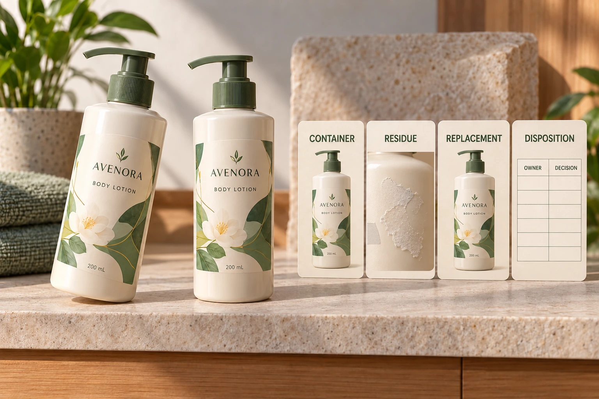

Separate the label from the application concern
Identify the approved artwork, supplied construction, container and affected operation. Describe the observed placement against the actual accepted reference. A crooked applied label and a misprinted label require different questions, even when both are reported as a label problem.
Record which stock has been observed and which remains unreviewed. Keep affected packs identifiable under the site's process. Do not extend one observation into an order-wide conclusion without the appropriate examination and decision.
The quality-issue guide organizes the wider evidence handoff. Here the decision is narrower: whether an identified pack can undergo an agreed correction and still meet its requirements.
Obtain the method from the responsible parties
Ask the container, label and filling parties what information they need to evaluate removal and replacement. Include the pack's filled state, known application history and intended next operation. An empty sample can have a different review scope from a filled finished product.
This guide prescribes no solvent, heat setting, scraping tool or manual removal technique. The responsible technical and site owners must establish any method appropriate to the actual materials and product context. Do not improvise a treatment from a generic online tip and apply it to production packs.
Likewise, do not promise residue-free removal from a material name. The removable-versus-wash-off guide explains intended removal functions. A label selected for normal use is not automatically qualified for the rework now proposed.
Review the surface after removal
The relevant reviewers should define what must be examined: remaining label material, adhesive, visible container changes and any other issue relevant to the pack. Record the actual observations without translating a photograph into an unsupported cleanliness or safety conclusion.
If the method changes the container surface or leaves an uncertain condition, ask whether a replacement label can be evaluated meaningfully. Applying another label can conceal a concern without resolving it. The new placement needs the actual approved reference too.
Preserve the distinction between appearance acceptance and broader product or process release. Where the filled product or its controls could be affected, the site's responsible quality team must decide what additional review applies. A packaging article cannot authorize that release.
Use a staged rework record
The worksheet below is an editorial way to collect the decision, not a validated operating instruction. The technical owners supply the procedure and acceptance criteria.
| Stage | Input or evidence | Decision required |
|---|---|---|
| Identify | Pack, construction, revision and affected stock | What is within the rework scope? |
| Define | Approved placement and observed difference | What is being corrected? |
| Propose | Supported method and responsible owner | May a representative evaluation proceed? |
| Remove | Identified sample under the authorized method | What surface condition remains? |
| Replace | Approved label and placement on reviewed surface | Does the proposed correction meet the requirement? |
| Release | Quality/operations decision and limitations | Which stock may proceed? |
| Reconcile | Used, replaced, held and remaining components | Does the production record match the disposition? |
Start with identity and the placement requirement. Obtain the proposed method and evaluation scope, record the relevant before-and-after evidence and have the responsible owners decide the outcome. Extend a successful sample only within the expressly accepted scope; a sample approval is not unlimited permission for another construction or condition.

Allow rejection of the route as a valid result
A hypothetical empty presentation bottle may have a supported correction method and a limited visual acceptance requirement. A documented rework review can be proportionate to that task.
A filled production pack with an uncertain surface or an unsupported removal method has a different boundary. The responsible team may need to hold the packs, obtain another evaluation or choose a different disposition. Replacing the label is not necessarily the economical or appropriate outcome.
Keep the component balance visible if rework is approved. Identify the replacement artwork and quantity needed, and prevent removed or obsolete material from reentering usable stock. Do not treat a supplier's acknowledgment of a report as a promise to fund or perform rework; the actual response and order terms govern that question.
For a cosmetic label review, provide the job, container, construction, approved placement, affected stage and precise rework question. The form prepares a message; send matched photographs and relevant procedures by email or WhatsApp. Ask which evidence and responsible approvals are needed before correcting the wider group.